| 日付 | 2008年11月30日（日） |
|---|---|
| 山域 | 丹沢 |
| メンバー | グループ（男5女6） |
| 山行形態 | 日帰り |
| アクセス | 電車 |
| ルート (Map) | 谷峨駅→大野山→山北駅 |
丹沢にある大野山ハイキングに出かける。
頂上付近は牧場があり、好展望の山ということで
前々から気になっていた山だ。
今日は快晴なので絶好の展望が期待できそうだ。
10:23 谷峨駅到着。標高170m。
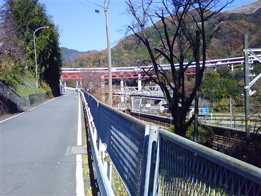
丹沢前衛の山々は標高が低く、ちょうど紅葉が見頃を迎えている。
のんびりとした風景の中、大野山に向かう。
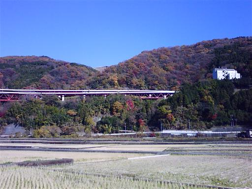
山の向こう側に富士山の頭が見えてきた。
山頂からはきれいな富士山が見られるだろう。
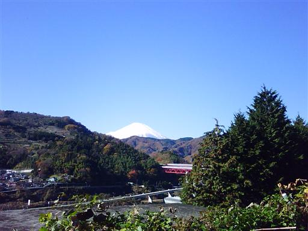
大野山ハイキングコース入口に到着。
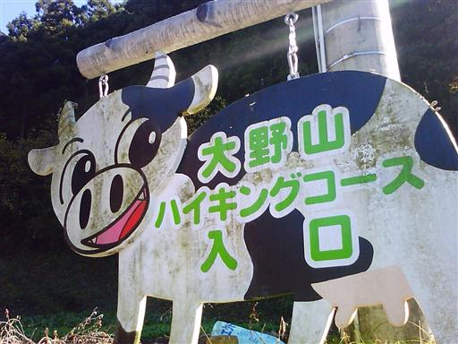
生い茂る樹木の向こう側に丸い形の大野山が見える。
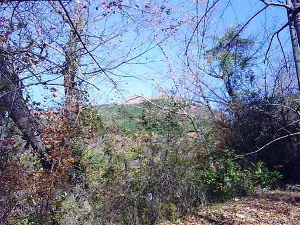
今日は天気がよく非常に暖かい。まさにハイキング日和だ。
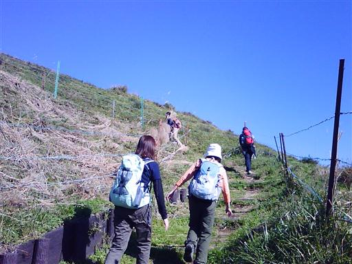
登山道からは富士山がきれいに見える。
ここは丹沢でも西の方にあるので本当に富士山が近い。
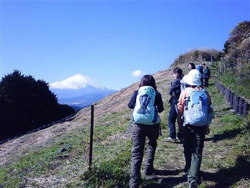
富士山の左側にはピークを2つもった愛鷹山が見えている。
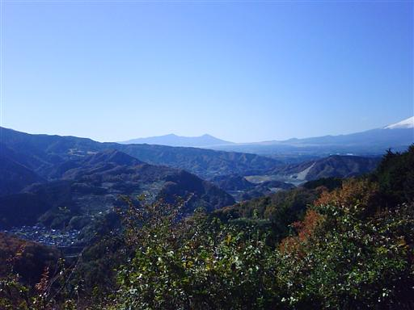
山頂付近は牧場になっているので樹木は全くない。
展望のいい道をゆっくりと登っていく。
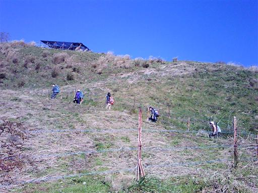
眼下には紅葉と、ゆったりと広がる草原が見える。
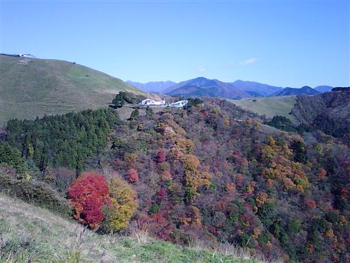
山頂部の一角に出てくる。ここからは平坦な道を歩いて行く。
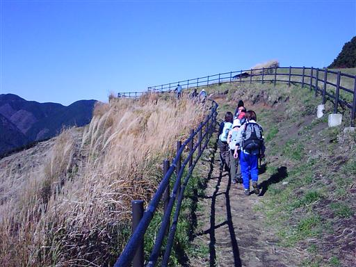
最後に一登りして大野山山頂到着。標高723m。
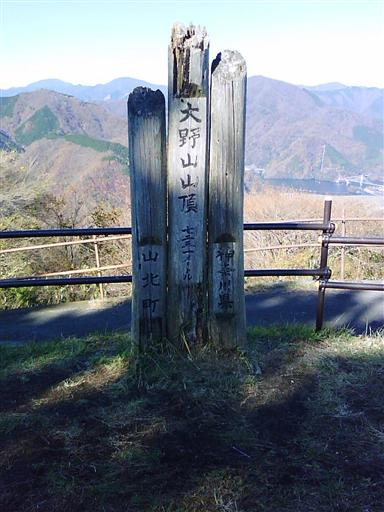
山頂からの景色。真正面に富士山がきれいに見える。
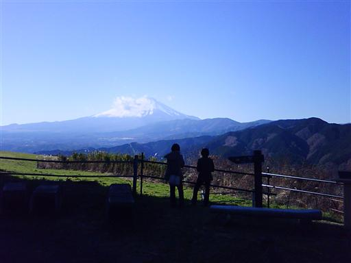
東側には丹沢の山々が連なる。
檜洞丸、蛭ヶ岳、丹沢山などかつて訪れた山々が望める。
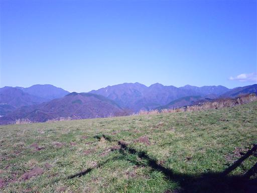
眼下には丹沢湖が見渡せる。
あの辺りも丹沢の観光地なので今日は賑わっていることだろう。
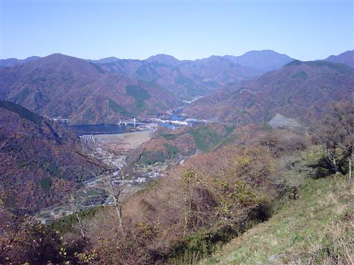
山頂は広々としている。この山は山頂まで車道が通じているので、
のんびり展望を楽しみに来ている人もちらほらいる。
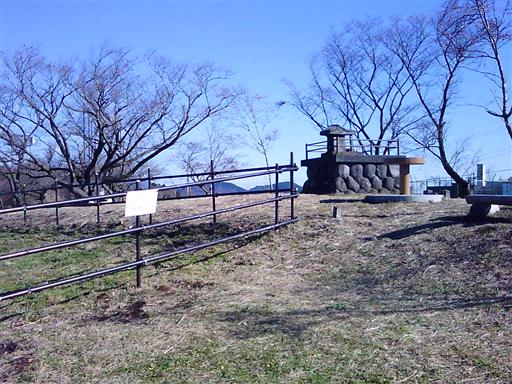
1時間ほど山頂でゆっくりした後、下山を開始する。
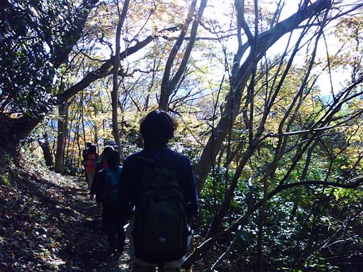
もみじが赤く色付いて非常にきれいだ。
ちょうど今が紅葉の見頃だ。
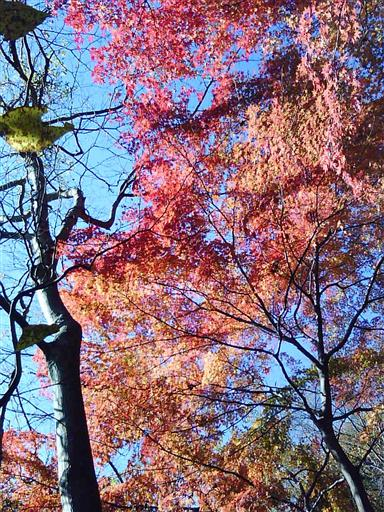
振り返るとゆったりとした大野山が見えている。
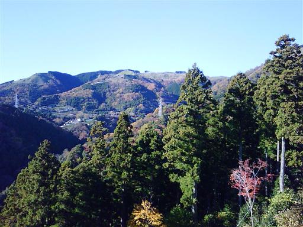
登山道は途中から車道になる。車道歩きが長いのがこの山の欠点だ。
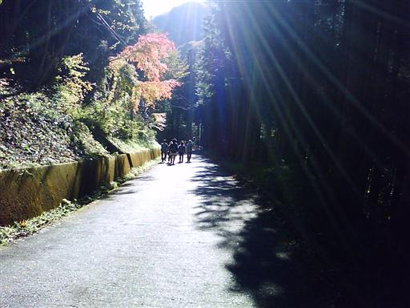
15:06 山北駅到着。標高110m。
駅前にある健康福祉センター内にある温泉・さくらの湯に寄って行く。
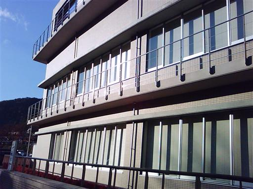